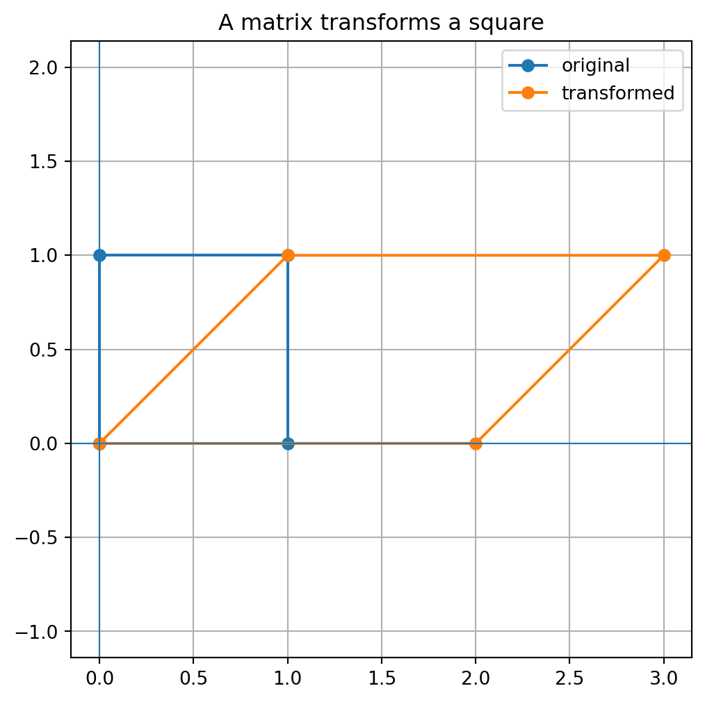

Code
import numpy as np
import matplotlib.pyplot as plt
A = np.array([[2, 1],
[0, 1]])
x = np.array([1, 2])
A @ xarray([4, 2])How a table of numbers becomes a rule for changing the world
In the first chapters, we learned to turn the world into numbers. A person became a feature vector. A small image became a grid of pixel values. A sentence became a list of counts or weights. A dataset became a cloud of points.
But mathematics is not only about describing things. It is also about changing things.
A photo can be brightened. A shape can be rotated. A dataset can be centered. A signal can be filtered. A recommendation system can turn a user profile into predicted preferences. A neural network layer can turn one representation into another.
In all these examples, we need a machine:
\[ \text{input vector} \longmapsto \text{output vector}. \]
A matrix is one of the most important machines in mathematics. It is a rectangular table of numbers, but it is not merely a table. It is a rule for transforming vectors.
For example,
\[ A = \begin{bmatrix} 2 & 0 \\ 0 & 3 \end{bmatrix} \]
takes
\[ x = \begin{bmatrix} 1 \\ 2 \end{bmatrix} \]
to
\[ Ax = \begin{bmatrix} 2 & 0 \\ 0 & 3 \end{bmatrix} \begin{bmatrix} 1 \\ 2 \end{bmatrix} = \begin{bmatrix} 2 \\ 6 \end{bmatrix}. \]
The point \((1,2)\) becomes \((2,6)\). The matrix stretches the horizontal direction by \(2\) and the vertical direction by \(3\).
This chapter introduces one of the central ideas of linear algebra:
A matrix is a machine that transforms vectors by combining its columns.
That sentence is simple, but it contains much of linear algebra, data science, computer graphics, statistics, optimization, and artificial intelligence.
By the end of this chapter, you should be able to:
A matrix can be viewed in at least three ways.
A matrix is an array of numbers arranged in rows and columns:
\[ A = \begin{bmatrix} a_{11} & a_{12} & \cdots & a_{1n} \\ a_{21} & a_{22} & \cdots & a_{2n} \\ \vdots & \vdots & \ddots & \vdots \\ a_{m1} & a_{m2} & \cdots & a_{mn} \end{bmatrix}. \]
If \(A\) has \(m\) rows and \(n\) columns, then \(A\) is called an \(m \times n\) matrix.
The entry \(a_{ij}\) is the number in row \(i\) and column \(j\).
For example,
\[ A = \begin{bmatrix} 2 & -1 & 4 \\ 0 & 3 & 5 \end{bmatrix} \]
is a \(2 \times 3\) matrix. Its entry in row \(1\), column \(3\) is \(4\).
The same matrix can be written as a list of columns:
\[ A = \begin{bmatrix} | & | & & | \\ a_1 & a_2 & \cdots & a_n \\ | & | & & | \end{bmatrix}. \]
Each \(a_j\) is a vector in \(\mathbb{R}^m\).
For example,
\[ A = \begin{bmatrix} 2 & -1 & 4 \\ 0 & 3 & 5 \end{bmatrix} = \begin{bmatrix} | & | & | \\ a_1 & a_2 & a_3 \\ | & | & | \end{bmatrix}, \]
where
\[ a_1 = \begin{bmatrix} 2 \\ 0 \end{bmatrix}, \qquad a_2 = \begin{bmatrix} -1 \\ 3 \end{bmatrix}, \qquad a_3 = \begin{bmatrix} 4 \\ 5 \end{bmatrix}. \]
This column view will become one of the most important views in the whole book.
If \(A\) is an \(m \times n\) matrix, then it takes an input vector in \(\mathbb{R}^n\) and produces an output vector in \(\mathbb{R}^m\):
\[ A : \mathbb{R}^n \to \mathbb{R}^m. \]
The number of columns tells us the size of the input. The number of rows tells us the size of the output.
For example, if
\[ A = \begin{bmatrix} 2 & -1 & 4 \\ 0 & 3 & 5 \end{bmatrix}, \]
then \(A\) is a \(2 \times 3\) matrix. It takes a vector in \(\mathbb{R}^3\) and outputs a vector in \(\mathbb{R}^2\):
\[ A : \mathbb{R}^3 \to \mathbb{R}^2. \]
This is why the product \(Ax\) makes sense when \(x\) has three entries.
If \(A\) is \(m \times n\) and \(x\) is in \(\mathbb{R}^n\), then \(Ax\) is in \(\mathbb{R}^m\).
\[ \underbrace{A}_{m \times n}\underbrace{x}_{n \times 1} = \underbrace{Ax}_{m \times 1}. \]
Suppose
\[ A = \begin{bmatrix} 2 & -1 & 4 \\ 0 & 3 & 5 \end{bmatrix}, \qquad x = \begin{bmatrix} 1 \\ 2 \\ -1 \end{bmatrix}. \]
The product \(Ax\) is computed by taking dot products of rows of \(A\) with the vector \(x\):
\[ Ax = \begin{bmatrix} 2(1) + (-1)(2) + 4(-1) \\ 0(1) + 3(2) + 5(-1) \end{bmatrix} = \begin{bmatrix} -4 \\ 1 \end{bmatrix}. \]
Each output coordinate is a weighted sum of the input coordinates.
This is the row view.
The first row gives the formula for the first output coordinate:
\[ y_1 = 2x_1 - x_2 + 4x_3. \]
The second row gives the formula for the second output coordinate:
\[ y_2 = 3x_2 + 5x_3. \]
So the matrix represents a system of linear recipes:
\[ \begin{aligned} y_1 &= 2x_1 - x_2 + 4x_3, \\ y_2 &= 3x_2 + 5x_3. \end{aligned} \]
Rows tell us how each output coordinate is calculated from the input coordinates.
There is another view that is even more powerful.
Write the columns of \(A\) as \(a_1,a_2,a_3\):
\[ A = \begin{bmatrix} | & | & | \\ a_1 & a_2 & a_3 \\ | & | & | \end{bmatrix}. \]
If
\[ x = \begin{bmatrix} x_1 \\ x_2 \\ x_3 \end{bmatrix}, \]
then
\[ Ax = x_1a_1 + x_2a_2 + x_3a_3. \]
This means that \(Ax\) is a linear combination of the columns of \(A\).
For the same example,
\[ A = \begin{bmatrix} 2 & -1 & 4 \\ 0 & 3 & 5 \end{bmatrix}, \qquad x = \begin{bmatrix} 1 \\ 2 \\ -1 \end{bmatrix}, \]
we have
\[ Ax = 1 \begin{bmatrix} 2 \\ 0 \end{bmatrix} + 2 \begin{bmatrix} -1 \\ 3 \end{bmatrix} - 1 \begin{bmatrix} 4 \\ 5 \end{bmatrix} = \begin{bmatrix} -4 \\ 1 \end{bmatrix}. \]
The row view says:
Each output coordinate is a dot product.
The column view says:
The output is built by mixing the columns of the matrix.
Both are correct. The column view connects Chapter 5 directly to Chapter 3: matrix-vector multiplication is linear combination in disguise.
Columns tell us what building blocks the matrix can use. The input vector tells us how much of each building block to use.
In \(\mathbb{R}^2\), the standard basis vectors are
\[ e_1 = \begin{bmatrix} 1 \\ 0 \end{bmatrix}, \qquad e_2 = \begin{bmatrix} 0 \\ 1 \end{bmatrix}. \]
For a \(2 \times 2\) matrix
\[ A = \begin{bmatrix} a & b \\ c & d \end{bmatrix}, \]
we get
\[ Ae_1 = \begin{bmatrix} a \\ c \end{bmatrix}, \qquad Ae_2 = \begin{bmatrix} b \\ d \end{bmatrix}. \]
These are exactly the columns of \(A\).
So the columns of a matrix are not random pieces of a table. They are the images of the pure coordinate directions.
A \(2 \times 2\) matrix is completely determined by where it sends \(e_1\) and \(e_2\).
For example,
\[ A = \begin{bmatrix} 1 & 2 \\ 0 & 1 \end{bmatrix} \]
sends
\[ e_1 \mapsto \begin{bmatrix} 1 \\ 0 \end{bmatrix}, \qquad e_2 \mapsto \begin{bmatrix} 2 \\ 1 \end{bmatrix}. \]
The first basis direction stays fixed. The second basis direction tilts to the right. This is a shear.
A matrix does not only move one vector. It moves every vector.
If we apply a matrix to many points in the plane, we can see the matrix as a transformation of the whole plane.
\[ S = \begin{bmatrix} 2 & 0 \\ 0 & 3 \end{bmatrix}. \]
This sends
\[ (x,y) \mapsto (2x,3y). \]
It stretches horizontally by \(2\) and vertically by \(3\).
\[ R = \begin{bmatrix} 1 & 0 \\ 0 & -1 \end{bmatrix}. \]
This sends
\[ (x,y) \mapsto (x,-y). \]
It reflects points across the horizontal axis.
\[ H = \begin{bmatrix} 1 & 1.5 \\ 0 & 1 \end{bmatrix}. \]
This sends
\[ (x,y) \mapsto (x+1.5y,y). \]
Horizontal position changes depending on height. A square becomes a slanted parallelogram.
For an angle \(\theta\), the rotation matrix is
\[ Q_\theta = \begin{bmatrix} \cos \theta & -\sin \theta \\ \sin \theta & \cos \theta \end{bmatrix}. \]
This rotates every vector counterclockwise by angle \(\theta\).
For example, when \(\theta = 90^\circ\), we have
\[ Q_{90^\circ} = \begin{bmatrix} 0 & -1 \\ 1 & 0 \end{bmatrix}. \]
This sends \((1,0)\) to \((0,1)\) and \((0,1)\) to \((-1,0)\).
One of the best ways to understand a matrix is to apply it to a grid.
A grid shows many points at once. When a matrix transforms the grid, we see the behavior of the whole transformation.
Linear transformations have a special property:
They keep grid lines straight and parallel.
A matrix can stretch, rotate, reflect, shear, flatten, or collapse space. But it does not bend straight lines into curves.
This is why linear algebra is powerful. Linear transformations are simple enough to understand, but rich enough to model many real operations.
A transformation represented by a matrix sends:
This visual rule is not a formal proof, but it is an excellent geometric guide.
Matrices are not only geometric objects. They are data machines.
Suppose a student is represented by a feature vector
\[ x = \begin{bmatrix} \text{homework score} \\ \text{exam score} \\ \text{project score} \end{bmatrix}. \]
A course may convert these three scores into two summaries:
\[ \begin{bmatrix} \text{overall grade} \\ \text{conceptual strength} \end{bmatrix} = \begin{bmatrix} 0.3 & 0.5 & 0.2 \\ 0.2 & 0.3 & 0.5 \end{bmatrix} \begin{bmatrix} \text{homework score} \\ \text{exam score} \\ \text{project score} \end{bmatrix}. \]
The first row gives one recipe. The second row gives another recipe.
Matrices allow us to turn raw features into meaningful summaries. This is one of the basic patterns behind data pipelines and machine learning models.
Images are made of pixels. A grayscale image can be represented as a matrix of brightness values.
But an image can also be reshaped into a long vector. Then a matrix can transform that vector.
For example:
Even when the image looks visual, the computation is often matrix-based.
A small \(3 \times 3\) image can be vectorized into a \(9\)-dimensional vector:
\[ \begin{bmatrix} p_{11} & p_{12} & p_{13} \\ p_{21} & p_{22} & p_{23} \\ p_{31} & p_{32} & p_{33} \end{bmatrix} \quad \longrightarrow \quad \begin{bmatrix} p_{11} \\ p_{12} \\ p_{13} \\ p_{21} \\ \vdots \\ p_{33} \end{bmatrix}. \]
A matrix can then act on this vector. In later chapters, this idea will lead to image compression, convolution, Fourier bases, Haar wavelets, and neural networks.
A basic layer of a neural network has the form
\[ y = Ax + b. \]
The matrix \(A\) mixes the input features. The vector \(b\) shifts the result. Then a nonlinear function is usually applied.
This means that even modern AI systems are built from many matrix machines stacked together.
A large language model, an image classifier, or a recommendation system may contain billions of numbers. But many of its core operations still follow the same pattern:
\[ \text{input vector} \longmapsto \text{matrix transformation} \longmapsto \text{new vector}. \]
Linear algebra gives us the grammar for understanding those transformations.
import numpy as np
import matplotlib.pyplot as plt
A = np.array([[2, 1],
[0, 1]])
x = np.array([1, 2])
A @ xarray([4, 2])Now apply the same matrix to a set of points.
points = np.array([
[0, 0],
[1, 0],
[1, 1],
[0, 1],
[0, 0]
])
transformed = points @ A.T
plt.figure(figsize=(6,6))
plt.plot(points[:,0], points[:,1], marker='o', label='original')
plt.plot(transformed[:,0], transformed[:,1], marker='o', label='transformed')
plt.axhline(0, linewidth=0.8)
plt.axvline(0, linewidth=0.8)
plt.axis('equal')
plt.grid(True)
plt.legend()
plt.title('A matrix transforms a square')
plt.show()
Notice that the square becomes a parallelogram. The matrix moved every corner, and the edges moved with them.
Suppose each person is represented by three features:
\[ \begin{bmatrix} \text{study hours} \\ \text{sleep hours} \\ \text{practice problems} \end{bmatrix}. \]
We can use a matrix to create two new features:
\[ \begin{bmatrix} \text{preparedness} \\ \text{balance} \end{bmatrix}. \]
X = np.array([
[4, 7, 20],
[8, 5, 35],
[2, 8, 10],
[6, 6, 25]
])
M = np.array([
[0.4, 0.2, 0.4],
[0.2, 0.6, 0.2]
])
Y = X @ M.T
Yarray([[11. , 9. ],
[18.2, 11.6],
[ 6.4, 7.2],
[13.6, 9.8]])Each row of X is a person. Each row of Y is a transformed representation.
This is a small version of what feature engineering and neural network layers do.
The identity matrix is the matrix that leaves every vector unchanged.
In \(\mathbb{R}^2\),
\[ I = \begin{bmatrix} 1 & 0 \\ 0 & 1 \end{bmatrix}. \]
For every vector \(x\),
\[ Ix = x. \]
The identity matrix is like multiplying a number by \(1\). It changes nothing, but it is extremely useful because it represents the neutral transformation.
The zero matrix sends every vector to the zero vector.
For example,
\[ Z = \begin{bmatrix} 0 & 0 \\ 0 & 0 \end{bmatrix} \]
satisfies
\[ Zx = \begin{bmatrix} 0 \\ 0 \end{bmatrix} \]
for every \(x \in \mathbb{R}^2\).
The zero matrix is a machine that forgets all input information.
This language will become important later when we study information loss, rank, kernels, projections, and singular values.
Some matrices preserve enough information to reverse the transformation. Other matrices lose information.
Consider
\[ P = \begin{bmatrix} 1 & 0 \\ 0 & 0 \end{bmatrix}. \]
This sends
\[ (x,y) \mapsto (x,0). \]
It projects every point onto the horizontal axis.
After this transformation, the original \(y\)-coordinate is gone. The points \((2,1)\), \((2,5)\), and \((2,-3)\) all become \((2,0)\).
So \(P\) loses information.
This is the first appearance of one of the deepest questions in linear algebra:
When can we recover the input from the output?
The answer will lead to inverse matrices, systems of equations, rank, null spaces, and least squares.
Let
\[ A = \begin{bmatrix} 1 & 2 & 0 \\ -1 & 3 & 4 \end{bmatrix}, \qquad x = \begin{bmatrix} 2 \\ -1 \\ 3 \end{bmatrix}. \]
Compute \(Ax\).
Using rows,
\[ Ax = \begin{bmatrix} 1(2)+2(-1)+0(3) \\ -1(2)+3(-1)+4(3) \end{bmatrix} = \begin{bmatrix} 0 \\ 7 \end{bmatrix}. \]
Using columns,
\[ Ax = 2 \begin{bmatrix} 1 \\ -1 \end{bmatrix} -1 \begin{bmatrix} 2 \\ 3 \end{bmatrix} +3 \begin{bmatrix} 0 \\ 4 \end{bmatrix} = \begin{bmatrix} 0 \\ 7 \end{bmatrix}. \]
Let
\[ A = \begin{bmatrix} 0 & -1 \\ 1 & 0 \end{bmatrix}. \]
What does \(A\) do to the plane?
We compute the images of the basis vectors:
\[ Ae_1 = \begin{bmatrix} 0 \\ 1 \end{bmatrix}, \qquad Ae_2 = \begin{bmatrix} -1 \\ 0 \end{bmatrix}. \]
So the horizontal unit vector moves to the vertical unit vector, and the vertical unit vector moves to the negative horizontal direction. This is a counterclockwise rotation by \(90^\circ\).
Let
\[ A = \begin{bmatrix} 1 & 1 \\ 2 & 2 \end{bmatrix}. \]
Does this matrix lose information?
The columns are
\[ \begin{bmatrix} 1 \\ 2 \end{bmatrix} \quad \text{and} \quad \begin{bmatrix} 1 \\ 2 \end{bmatrix}. \]
They are the same. Therefore
\[ Ax = x_1 \begin{bmatrix} 1 \\ 2 \end{bmatrix} + x_2 \begin{bmatrix} 1 \\ 2 \end{bmatrix} = (x_1+x_2) \begin{bmatrix} 1 \\ 2 \end{bmatrix}. \]
The output only remembers \(x_1+x_2\), not \(x_1\) and \(x_2\) separately. So the matrix loses information.
Compute
\[ \begin{bmatrix} 3 & -1 \\ 2 & 4 \end{bmatrix} \begin{bmatrix} 5 \\ -2 \end{bmatrix}. \]
\[ \begin{bmatrix} 3(5)+(-1)(-2) \\ 2(5)+4(-2) \end{bmatrix} = \begin{bmatrix} 17 \\ 2 \end{bmatrix}. \]
Let
\[ A = \begin{bmatrix} 2 & 0 \\ 0 & -1 \end{bmatrix}. \]
Describe the transformation geometrically.
The matrix sends \((x,y)\) to \((2x,-y)\). It stretches horizontally by \(2\) and reflects across the horizontal axis.
Let
\[ A = \begin{bmatrix} 1 & 2 \\ 0 & 0 \end{bmatrix}. \]
What is the output of \(A\) for the input \(x=(x_1,x_2)\)? Does this transformation lose information?
The output is
\[ Ax = \begin{bmatrix} x_1+2x_2 \\ 0 \end{bmatrix}. \]
All outputs lie on the horizontal axis. Many different inputs can produce the same output, so information is lost.
A matrix \(A\) satisfies
\[ Ae_1 = \begin{bmatrix} 3 \\ 1 \end{bmatrix}, \qquad Ae_2 = \begin{bmatrix} -2 \\ 4 \end{bmatrix}. \]
Write down \(A\).
The columns of \(A\) are \(Ae_1\) and \(Ae_2\):
\[ A = \begin{bmatrix} 3 & -2 \\ 1 & 4 \end{bmatrix}. \]
Explain why matrix-vector multiplication is a special case of linear combination.
If \(A\) has columns \(a_1,\dots,a_n\) and \(x=(x_1,\dots,x_n)\), then
\[ Ax = x_1a_1 + x_2a_2 + \cdots + x_na_n. \]
This is a linear combination of the columns of \(A\).
Find a \(2 \times 2\) matrix that sends
\[ e_1 \mapsto \begin{bmatrix} 2 \\ 1 \end{bmatrix}, \qquad e_2 \mapsto \begin{bmatrix} -1 \\ 3 \end{bmatrix}. \]
Then compute where it sends \((4,5)\).
The matrix is
\[ A = \begin{bmatrix} 2 & -1 \\ 1 & 3 \end{bmatrix}. \]
Then
\[ A \begin{bmatrix} 4 \\ 5 \end{bmatrix} = \begin{bmatrix} 2(4)-5 \\ 4+3(5) \end{bmatrix} = \begin{bmatrix} 3 \\ 19 \end{bmatrix}. \]
Find two different vectors \(x\) and \(y\) such that
\[ \begin{bmatrix} 1 & 1 \\ 2 & 2 \end{bmatrix}x = \begin{bmatrix} 1 & 1 \\ 2 & 2 \end{bmatrix}y. \]
The output only depends on the sum of the two input coordinates. For example,
\[ x = \begin{bmatrix} 1 \\ 0 \end{bmatrix}, \qquad y = \begin{bmatrix} 0 \\ 1 \end{bmatrix} \]
both produce
\[ \begin{bmatrix} 1 \\ 2 \end{bmatrix}. \]
Let
\[ S = \begin{bmatrix} 2 & 0 \\ 0 & 5 \end{bmatrix}. \]
Find a matrix \(T\) such that applying \(S\) and then \(T\) returns every vector to its original position.
The matrix \(S\) sends \((x,y)\) to \((2x,5y)\). To reverse it, divide the first coordinate by \(2\) and the second coordinate by \(5\):
\[ T = \begin{bmatrix} 1/2 & 0 \\ 0 & 1/5 \end{bmatrix}. \]
Then \(TSx=x\) for every vector \(x\).
Use an AI tool as a conversation partner, not as a replacement for your own reasoning.
A matrix is more than a rectangular array of numbers. It is a machine that transforms vectors.
The main ideas are:
The next chapters will deepen this view. We will study how matrices stretch, rotate, shear, collapse, and sometimes reverse transformations. Eventually, matrices will become tools for solving systems, compressing images, ranking webpages, analyzing data clouds, and building intelligent systems.